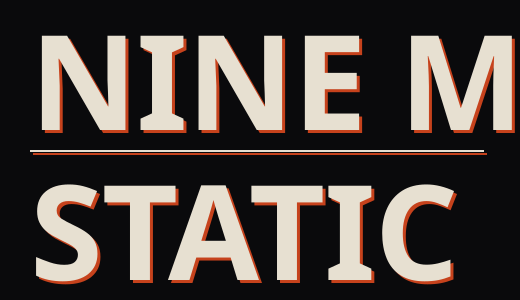
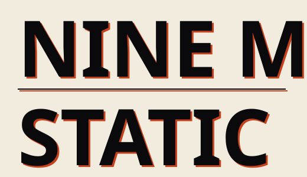
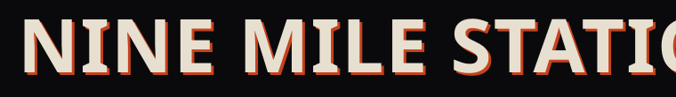
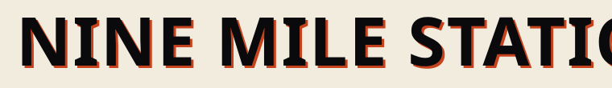
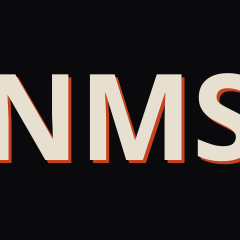

Booking — North America
Marisol Trueblood, Rope Ladder Booking
booking@ninemilestatic.demoOffers, holds, routing, festival bills, support slots. Include date, city, venue capacity, offer and whether it's a hold or a confirm.
ELECTRONIC PRESS KIT
Four-piece independent alternative rock from Cleveland, Ohio. Masters and publishing held by the band.
DEMO — download buttons are inert; no files are attached except the SVG logos.
Nine Mile Static are a four-piece alternative rock band from Cleveland, Ohio. Their self-released album Wire Season came out in March 2026. They tour the Midwest and Great Lakes in a van they own outright.
Nine Mile Static formed in 2019 in a converted machine shop on Cleveland's east side and have stayed exactly four people ever since: Dez Ferraro on vocals and rhythm guitar, Ruthie Okonjo on lead, Sal Brennerman on bass and keys, and Kit Halvorsen on drums. Their sound is built on two interlocking guitar parts that leave each other alone, a rhythm section that sits deliberately behind the beat, and words about night shifts, state routes and the particular boredom of a place you have no plans to leave. Wire Season, released in March 2026, was recorded live to tape in eleven days.
Nine Mile Static are a four-piece alternative rock band from Cleveland, Ohio, formed in 2019 out of a shared practice room in a converted machine shop three blocks from the lake.
The band's whole architecture comes from a decision made early and never revisited: two guitars, and neither of them ever plays a solo. Ruthie Okonjo, who spent nine years studying classical guitar before walking away from it, writes interlocking parts for herself and singer Dez Ferraro that behave more like a pair of hands on a piano than like a lead and a rhythm player. Underneath, bassist Sal Brennerman and drummer Kit Halvorsen play consistently a fraction behind where the ear expects the beat, which is the reason audiences lean in during the first two songs without being able to say why.
Ferraro wrote most of Wire Season during and immediately after six years of night-shift dispatch work, and the record keeps that vocabulary — highway mile markers, radio static, the fourth hour of a shift, a town called Patience that does and does not exist. What the songs decline to do is romanticise any of it.
The album was recorded live to two-inch tape over eleven days in a Cleveland room the band could afford, with almost nothing on it the four of them cannot reproduce on a Tuesday in Toledo. It was released in March 2026 on Carbon Hill Recordings, an imprint the band owns; they hold their masters and their publishing in four equal shares, with no label, publisher or distributor sitting between a licensing request and an answer.
Nine Mile Static have played more than two hundred shows across the American Midwest, the Northeast and Eastern Canada, headlining rooms of three hundred and selling out twelve hundred at home. They are routing summer 2027 now.
Nine Mile Static: four-piece alternative rock from Cleveland, Ohio. Two interlocking guitars, no solos, a rhythm section behind the beat. Self-released LP Wire Season (March 2026) was cut live to tape in eleven days. They own their masters and publishing.
Nine Mile Static are a four-piece alternative rock band from Cleveland, Ohio, formed in 2019 in a converted east-side machine shop. Two guitars that interlock and never solo, a rhythm section that sits behind the beat, and songs about night shifts and state routes. Their album Wire Season was recorded live to two-inch tape in eleven days and released in March 2026 on their own imprint, Carbon Hill Recordings. The band hold their masters and publishing in four equal shares. They are routing summer 2027.
Usage: These photographs are cleared for editorial use in connection with coverage of Nine Mile Static. The photographer's credit must be published wherever the image is. Do not crop the credit out, do not recolour, do not use for advertising or merchandise without written permission. Credit exactly as written under each image.
| Ch | Source | Mic / DI (preferred) | Stand | Insert / note |
|---|---|---|---|---|
| 1 | Kick in | Dynamic kick mic | Short boom | Gate |
| 2 | Kick out | Large-diaphragm dynamic | Short boom | Blend to taste |
| 3 | Snare top | Dynamic | Clip or short boom | |
| 4 | Snare bottom | Dynamic | Clip | Polarity flipped |
| 5 | Hi-hat | Small-diaphragm condenser | Short boom | Often unused, fine |
| 6 | Rack tom | Dynamic | Clip | Gate |
| 7 | Floor tom | Dynamic | Clip | Gate |
| 8 | Overhead L | Small-diaphragm condenser | Tall boom | +48v |
| 9 | Overhead R | Small-diaphragm condenser | Tall boom | +48v |
| 10 | Bass DI | Active DI, post-pedals | — | Band provides own DI |
| 11 | Bass cab | Dynamic | Short boom | Optional, blend |
| 12 | Keys (mono) | DI | — | Mono is fine — no stereo required |
| 13 | Gtr SL — Okonjo | Dynamic, off-axis on cone edge | Short boom | |
| 14 | Gtr SR — Ferraro | Dynamic, off-axis on cone edge | Short boom | |
| 15 | Vocal — Ferraro (lead) | Dynamic, band supplies own capsule | Tall boom | |
| 16 | Vocal — Okonjo (BV) | Dynamic | Tall boom | |
| 17 | Vocal — Brennerman (BV) | Dynamic | Tall boom | Drop first if channel-limited |
Monitors: 4 wedges on 4 mixes (or 3 mixes + drum fill) preferred; the band will work with 2 mixes and have done. No IEMs.
Band supplies: all backline except drum shells on fly dates, own DI boxes, own vocal capsules, own cables.
Channel-limited? Cut in this order: 17, 5, 11, 4. A 12-channel show is fine — say so in advance and nobody will be surprised at line check.
20ft × 16ft preferred, 12ft × 10ft workable. Stable surface, a drum riser if the room has one. Four 110v drops as marked on the plot, on a circuit not shared with lighting dimmers.
4 wedges on 4 mixes, or 3 mixes plus a drum fill. We can work with 2 mixes. No IEMs, so no RF coordination needed.
On headline dates we travel with a FOH engineer who doubles as tour manager. On support dates we're happy to use the house engineer; the input list above is all they need.
Anything but a full white wash. We'd rather be too dark.
Headline: load-in 4:00pm, line check and sound check 5:00–6:00pm. Support: load-in by 6:00pm, 20-minute line check, 20-minute changeover. We'll confirm exact times on the advance.
One 15-passenger van with a trailer, as close to the load-in door as the street allows, for load-in and load-out. This is the thing venues forget.
If catering is tight, tell us and we'll eat before we get there.
We sell our own. One 6ft table and a light, placed where people walk past it on the way out. Standard venue split.
6.
Tour manager — name and number supplied on the advance.

STACKED · BONE ON PITCH · SVG

STACKED · PITCH ON PAPER · SVG

HORIZONTAL · BONE ON PITCH · SVG

HORIZONTAL · PITCH ON PAPER · SVG

MONOGRAM · SVG
DEMO — no live profiles exist.
Marisol Trueblood, Rope Ladder Booking
booking@ninemilestatic.demoOffers, holds, routing, festival bills, support slots. Include date, city, venue capacity, offer and whether it's a hold or a confirm.
Aldo Peirce, Weathervane Publicity
press@ninemilestatic.demoInterviews, reviews, premieres, radio servicing, guest lists for reviewers. Everything you need to write the piece is already on this page.
Hattie Okorie, Small Hours Management
management@ninemilestatic.demoPartnerships, brand, longer-term anything. Not the address for a single-show offer.
Direct to the band
sync@ninemilestatic.demoFilm, TV, games, trailers, advertising. We control both the master and the publishing in four equal shares — one email clears the whole thing. Tell us the project, the term, the territory and the deadline and you'll have an answer the same week.
Rights, plainly: all masters and publishing are held by the four members in equal shares. No label, no publisher, no distributor exclusivity.
| Asset | Type | Dimensions | Size | File |
|---|---|---|---|---|
| Everything | ZIP | — | 184 MB | DEMO — no file attached |
| One-sheet | PDF, 1 page | A4 / Letter | 1.1 MB | DEMO — no file attached |
| All press photos | ZIP | 6 files | 62 MB | DEMO — no file attached |
| Press photo 01–06 | JPEG | up to 5200 × 3400 | 7.6–14.1 MB each | DEMO — no file attached |
| Stage plot | PDF, 1 page | — | 420 KB | DEMO — no file attached |
| Stage plot | PNG | 2400 × 1600 | 680 KB | DEMO — no file attached |
| Input list | PDF, 1 page | — | 180 KB | DEMO — no file attached |
| Full tech rider | PDF, 3 pages | — | 610 KB | DEMO — no file attached |
| Logo pack | ZIP (SVG, PNG @2x, PNG transparent, EPS) | — | 4.1 MB | DEMO — no file attached |
| Stacked wordmark, bone | SVG | 520 × 300 | 1 KB · included | in assets/logo/ |
| Stacked wordmark, pitch | SVG | 520 × 300 | 1 KB · included | in assets/logo/ |
| Horizontal wordmark, bone | SVG | 760 × 110 | 1 KB · included | in assets/logo/ |
| Horizontal wordmark, pitch | SVG | 760 × 110 | 1 KB · included | in assets/logo/ |
| NMS monogram | SVG | 240 × 240 | 1 KB · included | in assets/logo/ |